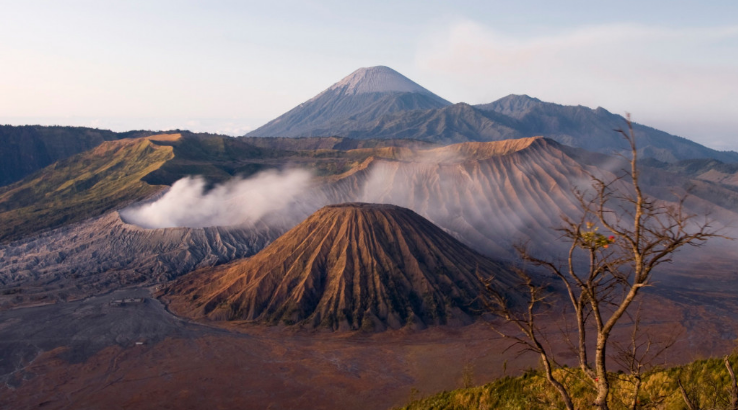
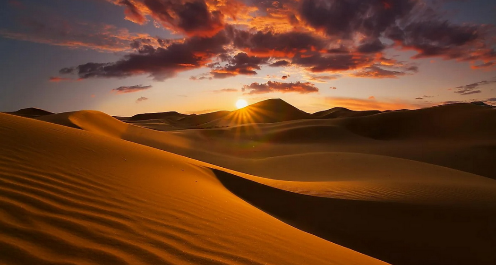
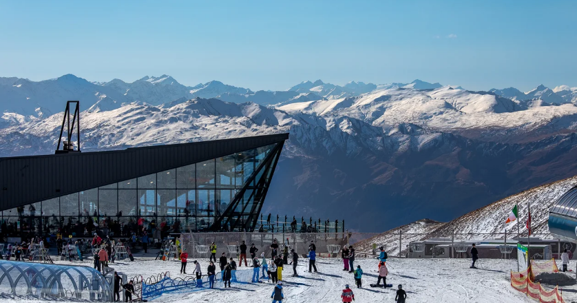
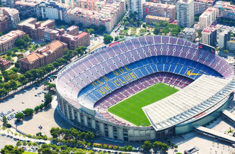

Với những ai là tín đồ của du lịch mạo hiểm và khám phá thì đây là nơi dành cho bạn:
Hang động lớn nhất thế giới với hệ sinh thái độc đáo, dòng sông ngầm và những măng đá khổng lồ. Chuyến thám hiểm ở đây kéo dài 4 ngày, giá tour 72 triệu đồng/người
Đây là nơi lý tưởng để khám phá miệng núi lửa và chiêm ngưỡng bình minh, giá tour du lịch khoảng 14.000.000 đến 25.000.000 VND

“Nóc nhà Đông Dương,” Fansipan cao 3.143 m là điểm đến yêu thích của dân leo núi. Giá tour từ 2.600.000 VNĐ đến 3.500.000 VNĐ
Hành trình băng qua sa mạc rộng lớn và khắc nghiệt này đòi hỏi sức bền và tinh thần mạnh mẽ, kéo dài 7-10 ngày, với chi phí khoảng 50-70 triệu VND,
Còn nếu bạn là một người thích nghỉ dưỡng thì không nên bỏ qua những địa điểm
Hội An: Thành phố cổ với kiến trúc độc đáo, nơi bạn có thể khám phá văn hóa và ẩm thực địa phương. Các homestay và resort ven sông cũng rất phổ biến, giá (2-3 ngày) có thể dao động từ 3.000.000 VNĐ đến 10.000.000 VNĐ/người tùy thuộc vào phong cách du lịch và lựa chọn cá nhân.
Đảo ngọc với các bãi biển tuyệt đẹp như Bãi Sao, Bãi Dài và các khu nghỉ dưỡng sang trọng, (3-4 ngày) có thể dao động từ 5.000.000 VNĐ đến 15.000.000 VNĐ/người

Kyoto (Nhật Bản) Thành phố cổ với các đền chùa lịch sử, vườn Nhật và những con phố cổ. Kyoto mang đến trải nghiệm văn hóa phong phú và không gian thanh bình, (5-7 ngày) có thể dao động từ 15.000.000 VNĐ đến 30.000.000 VNĐ/người
Bali (Indonesia): Nổi tiếng với các bãi biển đẹp, các khu nghỉ dưỡng sang trọng và nền văn hóa phong phú,(5-7 ngày) có thể dao động từ 15.000.000 VNĐ đến 30.000.000 VNĐ/người
Du lịch văn hóa là ko thể thiếu
Hà Nội: Thủ đô với nhiều di tích lịch sử như Văn Miếu - Quốc Tử Giám, Bảo tàng Dân tộc học và Hoàng thành Thăng Long. Hà Nội còn nổi tiếng với ẩm thực phong phú và các lễ hội truyền thống.
Huế: Cố đô Huế có nhiều di tích lịch sử như Kinh Thành Huế, lăng tẩm các vua triều Nguyễn và các ngôi chùa cổ. Huế nổi tiếng với các lễ hội và món ăn truyền thống như bún bò Huế.
Rome (Ý): Thành phố với nhiều di sản văn hóa, từ Colosseum đến Vatican. Rome là nơi lý tưởng để khám phá lịch sử cổ đại và nghệ thuật.
Du lịch với những bộ môn thể thao rất thú vị đúng không:
Trung tâm thể thao dưới nước Nha Trang: Cung cấp các hoạt động như lặn biển, moto nước, và parasailing.
Nổi tiếng với bungee jumping, nhảy dù, và trượt tuyết ở các khu nghỉ dưỡng như Coronet Peak
Sân vận động Camp Nou: Nơi tổ chức các trận đấu bóng đá của FC Barcelona. Đạp xe: Thành phố có nhiều đường đạp xe và các tour xe đạp khám phá.